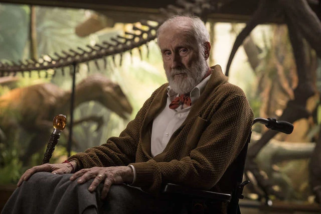

Personajes
Owen Grady
Owen Grady es un exmilitar y etólogo de dinosaurios que llevó una investigación conductual con los Velociraptores (Blue, Delta, Echo y Charlie) en la isla Nublar, durante los acontecimientos de Jurassic World.

Benjamin Lockwood
Benjamin fue el socio de John Hammond en el desarrollo de la tecnología para clonar a los dinosaurios.
Dr. Henry Wu
El doctor Henry Wu es un exgenetista de Jurassic Park en la isla Nublar, luego de ocultar sus investigaciones debido a los acontecimientos de Jurassic World. Está asociado con Mills.

Dr. Ian Malcolm
El doctor Ian Malcolm es un matemático estudioso de la teoría del caos que una vez consultó para el parque de dinosaurios anterior de InGen. Sobrevivió a los incidentes a la isla Nublar y la Isla Sorna durante los acontecimientos de Parque Jurásico y The Lost World: Jurassic Park.

Zia Rodríguez
Zia Rodríguez, ex infante de marina que ahora es paleo-veterinaria del Grupo de Protección de Dinosaurios.